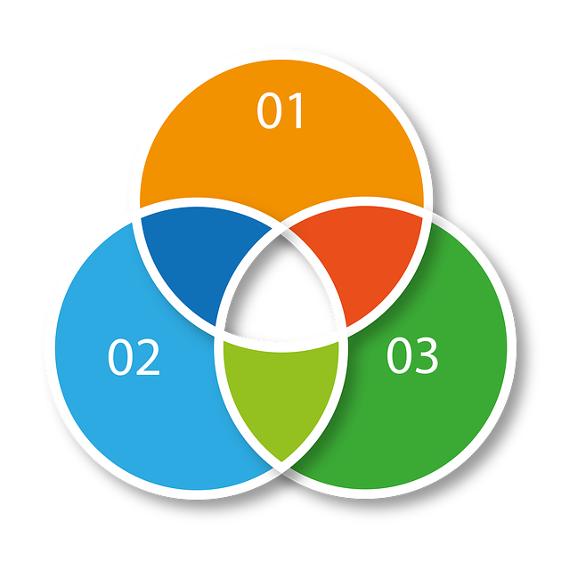

1. Introducción
En un mundo cada vez más globalizado, la relación entre la economía, la industria y la seguridad de la información es, cada vez, más patente. Reducir el impacto negativo de las nuevas tecnologías inherentes a la industria 4.0 sobre la economía supone un reto difícil de abordar.
2. Principios de la Economía Circular en la Industria 4.0
En 2015 Naciones Unidas aprobó la Agenda 2030 para el Desarrollo Sostenible, una hoja de ruta universal para poner fin a la pobreza, luchar contra la desigualdad y la injusticia y hacer frente al cambio climático, bajo el lema central de “No dejar a nadie atrás”.
En la misma se fijaron 17 Objetivos de Desarrollo Sostenible (ODS) con 169 metas a alcanzar en el año 2030 y un sistema de indicadores para su seguimiento.

Alexandra Koch. Economía Circular (Pixabay License)
Los 10 principios de la Economía Circular:
- El residuo se convierte en recurso. Todo el material biodegradable vuelve a la naturaleza y el no biodegradable se reutiliza.
- Reintroducir en el circuito económico aquellos productos que ya no corresponden a las necesidades iniciales de los consumidores.
- Reutilizar ciertos residuos o partes de ellos que todavía pueden funcionar para elaborar nuevos productos.
- Reparar y encontrar una segunda vida para los productos estropeados o defectuosos.
- Reciclar los materiales que se encuentran en los residuos.
- Aprovechar energéticamente los residuos que no se pueden reciclar.
- Eliminar la venta de ciertos productos para implantar un sistema de alquiler de bienes. Cuando el producto cumple su función principal, vuelve a la empresa y esta lo desmonta para reutilizar las piezas que pueden ser utilizadas nuevamente.
- Eliminar los combustibles fósiles para producir el producto, reutilizar y reciclar.
- Considerar los impactos medioambientales a lo largo del ciclo de vida de un producto y los integra desde su concepción.
- Establecer un método de organización industrial en un mismo territorio caracterizado por una gestión optimizada de los stocks y de los flujos de materiales, energía y servicios.
Por la naturaleza de los sistemas industriales, un fallo de seguridad en ellos puede poner en peligro el proceso de calidad del producto, la continuidad de negocio o la seguridad de los trabajadores, por tanto, es esencial disponer de las herramientas necesarias para garantizar el control de los entornos operacionales. Es necesaria una estrategia de ciberseguridad Industria 4.0.
Con la llegada de la Industria 4.0. y la conectividad del mundo IoT, los sistemas de control industrial ya no sólo se verán afectados por típicas averías o errores de operación en la gestión industrial, sino que, además se sumará el factor de la ciberseguridad que hasta ahora, era un desconocido en el mundo Industrial.
Algunas de las tecnologías de la Industria 4.0 al servicio de la economía circular son:
- El Internet de las cosas y el análisis de los datos: los productos que se conectan a Internet permiten a los fabricantes controlar y analizar su rendimiento a distancia y recabar la información de uso, lo que permite implantar diferentes modelos de negocios circulares.
- Robótica: Los avances en la robótica permite a los fabricantes emplear robots en una cantidad de aplicaciones cada vez mayor, incrementando el rendimiento y reduciendo los desechos, así como también prolongando la vida útil de los productos.
- Impresión 3D: El uso de la impresión 3D para la producción bajo demanda de repuestos mejora la rentabilidad y prolonga el ciclo de vida de los productos y equipos.
Dentro de estos ODS se tratan términos como la Economía Circular, la industria 4.0, etcétera.
Pero, ¿Cómo encajamos estos dos conceptos entre sí? y ¿Con el tema que estamos tratando?
Puede que esta cita de "Alianza Tecnológica Intersectorial de Galicia" no ayude:
“El desarrollo de una economía basada en modelos de negocio circulares implica la transición desde la denominada Economía Lineal, donde los flujos materiales siguen una secuencia lineal —extracción, producción, consumo y desecho—, a sistemas de producción en los que se reduce el consumo de materias primas, la generación de residuos, las emisiones y, al mismo tiempo, se incrementa el uso de materiales reciclados y fuentes de energía renovables (Reichel et al., 2016).
De este modo, la Economía Circular (EC) es aquella que es restitutiva y que tiene como objetivo el mantener la utilidad de los productos, componentes y materiales, reteniendo su valor dentro de la cadena de suministro (The Ellen MacArthur Foundation, 2015)".
Sin embargo, la EC "no debe ser reducida a una mera actitud ambientalista por parte de la sociedad y de la industria en particular, sino que debe ser vista como un nuevo enfoque económico, donde el crecimiento económico no puede estar ligado a las presiones sobre el medio ambiente, manteniendo la resiliencia de los ecosistemas y previniendo el impacto sobre nuestro bienestar.”
Más información sobre Economía Circular y su encaje en la Industria 4.0
- Articulo completo en ATIAGA. De los autores:
- Eduardo Rodríguez Fernández-Arroyo (Responsable del Área de Industria y Edificación Sostenible EnergyLab).
- Dr. Pedro Villanueva Rey (Técnico Investigador del Área de Industria y Edificación Sostenible EnergyLab).
- Otros artículos interesantes: